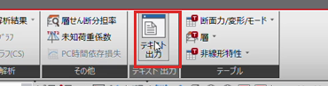
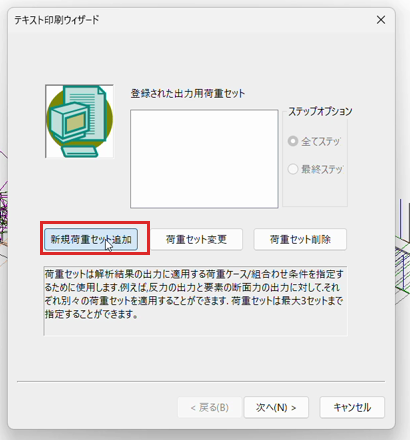
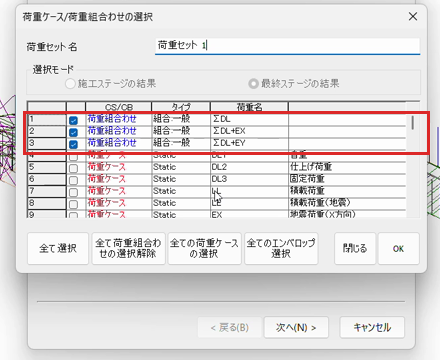
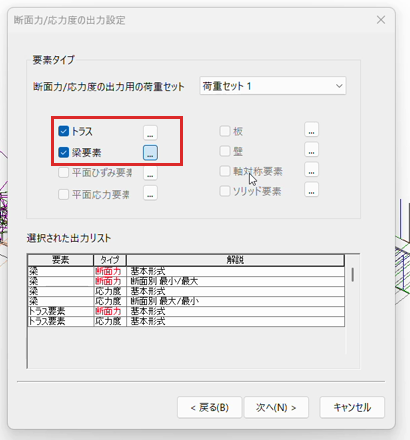
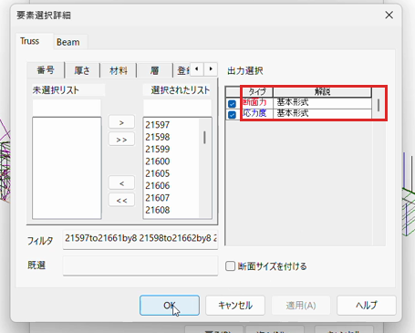
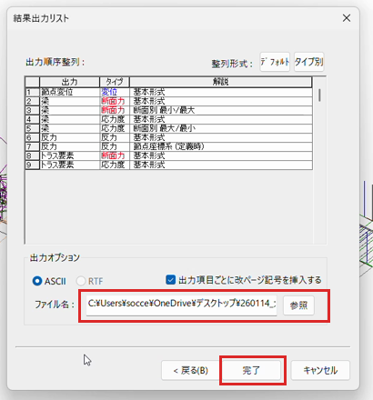
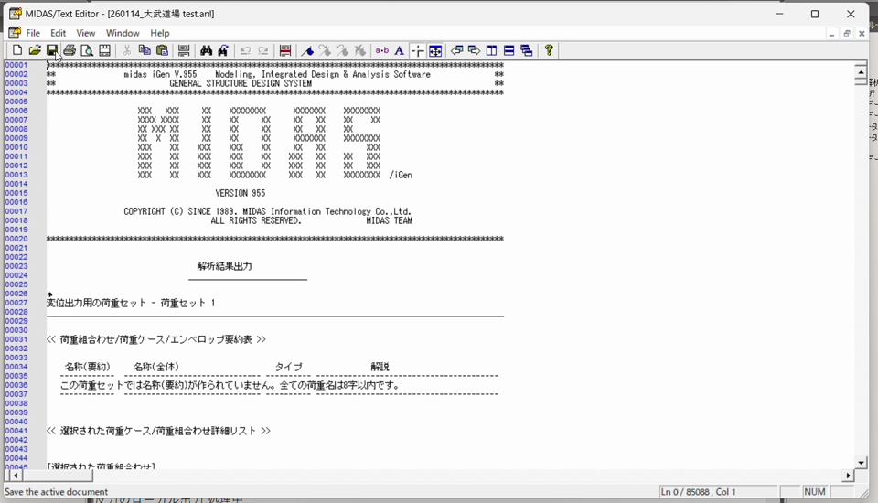

ANL（解析結果テキスト）の出力手順 midas iGen から MGT2Excel 用の解析結果ファイルを出力する方法
出力した .anl は、モデルの .mgt（ファイル → エクスポート → midas iGen MGT ファイル）と
一緒に MGT2Excel にドラッグ＆ドロップして使います。
解析を実行済みのモデルで操作してください。
1結果タブ →「テキスト出力」をクリック
リボンの「結果」タブ右側にある「テキスト出力」ボタンを押すと、 テキスト印刷ウィザードが開きます。

2「新規荷重セット追加」をクリック
最初の画面で「新規荷重セット追加」を押します （荷重セット＝どの荷重ケース/組合せを出力するかの指定です）。

3出力したい荷重組合わせに ☑ → OK
断面算定に使う荷重組合わせ（例: ΣDL・ΣDL+EX・ΣDL+EY）にチェックを 入れて OK。チェックした組合せが Excel の LC 列に並びます。

4「次へ」→ 断面力/応力度の出力設定で「トラス」「梁要素」に ☑
要素タイプで「トラス」と「梁要素」の両方にチェックします。 トラス（ブレース等）を忘れると、Excel でブレースの軸力が空欄になります。

5要素選択詳細 — Beam タブで出力位置を「5pt」にする（最重要）
「梁要素」の横の「…」ボタンで要素選択詳細を開き、 「Beam」タブに切り替えて、断面力の出力位置を「5pt」 （1部材につき I・1/4・中央・3/4・J の5か所）に設定します。 あわせて「断面力」にチェックが入っていることを確認してください（応力度は任意）。
⚠️ 5pt にしないと中間点の断面力が出力されません。
分布荷重を受ける梁は中央の曲げが端部より大きくなるため、端部（I/J）だけの出力では
Excel の max/min が実際より小さく出て危険側の評価になり得ます。必ず 5pt にしてください。

6「次へ」→ 出力内容とファイル名を確認 →「完了」
結果出力リストに「梁 断面力」「トラス要素 断面力」が並んでいることを確認し、 出力オプションは ASCII のまま、ファイル名（〜.anl）を確認して 「完了」を押します。保存先はモデルと同じフォルダが分かりやすいです。

7出力完了 — テキストエディタが開けば成功
メッセージウィンドウに「〜の出力 処理中…」と流れたあと、MIDAS/Text Editor で
<モデル名>.anl が開きます。これで ANL の完成です。
エディタは閉じて構いません。

ヒント:
Step 5 で 5pt にした中間点（1/4・中央 CNT・3/4）の断面力は、MGT2Excel の max/min に
自動で含まれます。また、断面力の分解能を上げたい場合は iGen の単位系を kN に
してから出力してください。